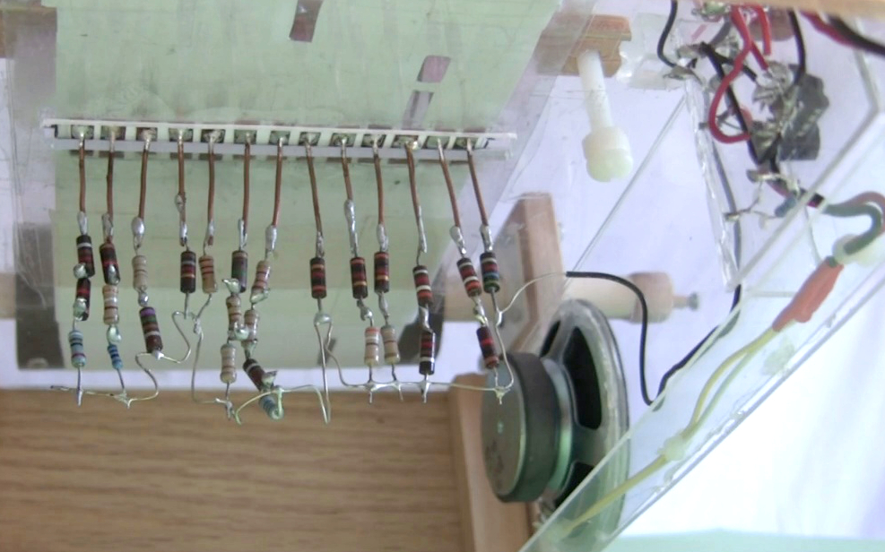
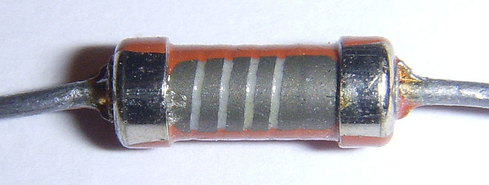
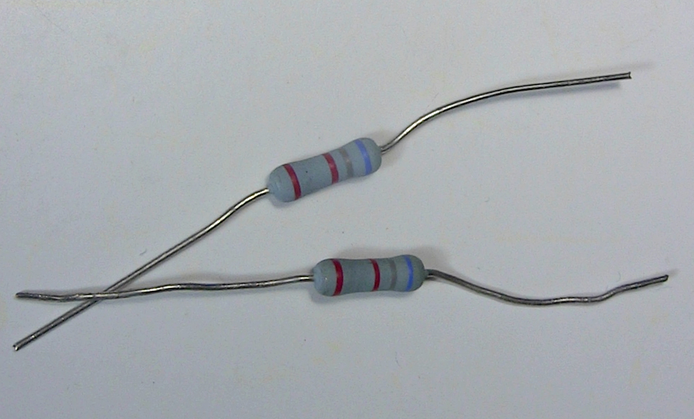
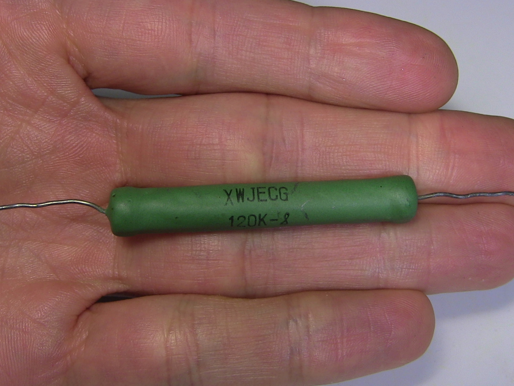
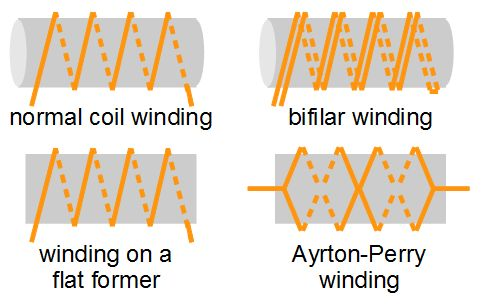
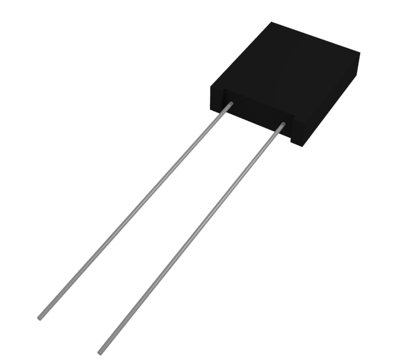
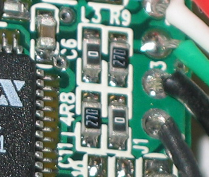

Резистор: кусочек материала, сопротивляющийся прохождению электрического тока. К обоим концам присоединены клеммы. И всё. Что может быть проще?
Оказывается, что это совсем не просто. Температура, ёмкость, индуктивность и другие параметры играют роль в превращении резистора в довольно сложный компонент. И использовать его в схемах можно по-разному, но мы сконцентрируемся на разных видах резисторов фиксированного номинала, на том, как их делают и как они могут пригодиться в разных случаях.
Начнём с самого простого и старого.
Углеродные композиционные резисторы

Углеродный композит в проигрывателе
Их часто называют «старыми» резисторами. Они широко применялись в 1960-х, но с появлением других типов резисторов и благодаря достаточно большой себестоимости, их использование сейчас ограничено. Они состоят из смеси керамического порошка с углеродом, связанных при помощи смолы. Углерод хорошо проводит ток, и чем больше его в смеси, тем меньше сопротивление. Провода присоединяются с концов. Они покрываются краской или пластиком, служащими изоляцией, а сопротивление и допуск обозначаются цветными полосками.
Сопротивление таких резисторов можно перманентно изменить, подвергнув их высокой влажности, высокому напряжению или перегреву. Допуск составляет 5% или более. Это просто твёрдый цилиндр с хорошими высокочастотными характеристиками. Также они хорошо переносят перегрев, несмотря на свой малый размер, и всё ещё используются в блоках питания и сварочных контроллерах.
Однако их возраст не остановил меня от использования мешка таких транзисторов, купленных мною в комиссионке с целью изготовления различных сопротивлений, которые были нужны мне для моего проекта муз. проигрывателя 555. На фото как раз моя поделка.
Углеродно-плёночные резисторы

Производятся нанесением слоя чистого углерода на керамический цилиндр и последующего удаления углерода с целью формирования спирали. Итог покрывается кремнием. Толщина слоя и ширина оставшегося углерода управляют сопротивлением, а допуск таких резисторов бывает от 2%, лучше, чем у предыдущих. Благодаря чистому углероду сопротивление меньше меняется с температурой.
Температурный коэффициент сопротивления углеродно-плёночных резисторов составляет от 200 до 500 ppm/C – миллионных долей на градус Цельсия. 200 ppm/C значит, что с каждым градусом сопротивление не изменится больше, чем на 200 Ом на каждый МОм общего сопротивления. В процентах это можно выразить как 0,02%/C. Если температура изменится на 80 С, при показателе 200 ppm/C сопротивление резистора поменяется на 1,6%, или на 16 кОм.
Такие резисторы выпускаются номиналом от 1 Ом до 10 кОм, мощностью от 1/16 Вт до 5 Вт и выдерживают напряжения в несколько киловольт. Обычно используются в высоковольтных блоках питания, рентгеновских аппаратах, лазерах и радарах.
Металлическая плёнка
Металлическая плёнка делается схожим с углеродной образом, путём размещения металлического слоя (часто это никель хром) на керамике, с последующим вырезанием спирали. Согласно документации от производителя Vishay, после присоединения клемм спираль раньше обрабатывали шлифовкой, но сейчас для этого используют лазеры. Результат покрывается лаком и помечается цветовой кодировкой или текстом.
Сопротивление резисторов из металлической плёнки меняется меньше, чем у углеродно-плёночных. ТКС находится в районе 50-100 ppm/C. 50 ppm/C аналогичны 0,005%/C. Использовав аналогичный приведённому выше пример с резистором в 1 МОм, изменение температуры на 80 С приведёт в случае резистора 50 ppm/C к изменению сопротивления на 0,4%, или на 4 кОм.
Допуск у них меньше, порядка 0,1%. Также обладают хорошими шумовыми характеристиками, низкой нелинейностью и хорошей стабильностью по времени, и используются для множества целей.
Плёнка из оксида металла

Случай схож с металлической плёнкой, только обычно используется оксид олова с примесью оксида сурьмы. Ведут себя такие резисторы лучше, чем углеродные или металлические плёнки, если говорить о напряжении, перегрузках, скачках и высоких температурах. Резисторы на углеродной плёнке работают до 200 С, на металлической – до 250-300 С, а резисторы на плёнке из оксида – до 450 С. При этом их стабильность весьма хромает.
Проволочные резисторы

Производятся намоткой провода на пластиковый, керамический или стекловолоконный цилиндр. Поскольку провод можно отрезать довольно точно, номинал их сопротивления можно выбрать с большой точностью с допуском не хуже 0,1%. Чтобы получить резистор с высоким сопротивлением, нужно использовать очень тонкий и длинный провод. Провод можно сделать тоньше для меньшей мощности или толще для большей мощности. Его можно изготавливать из большого числа металлов и сплавов, включая никель хром, медь, серебро, хромистой стали и вольфрама.
Разрабатываются с прицелом на возможность работы при высоких температурах: вольфрамовые выдерживают температуры до 1700 С, серебряные – от 0 до 150 С. ТКС у высокоточных проволочных резисторов составляет порядка 5 ppm/C. У резисторов, предназначенных для высоких мощностей, ТКС выше.
Работают на мощностях от 0,5 Вт до 1000 Вт. Резисторы на несколько сотен Вт могут быть покрыты высокотемпературным кремнием или стекловидной эмалью. Для увеличения теплоотвода могут быть оборудованы алюминиевым кожухом с пластинами, работающими как радиатор.

Виды намотки
Поскольку это практически катушки, у них присутствует индуктивность и ёмкость, из-за чего на высоких частотах они ведут себя плохо. Для уменьшения этих эффектов применяются различные хитрые схемы намотки, например, бифилярная, намотка на плоском носителе, и намотка Аэртона-Перри.
У бифилярной намотки отсутствует индукция, но высокая ёмкость. Намотка на плоском и тонком носителе сближает провода и уменьшает индукцию. Намотка Аэртона-Перри, благодаря тому, что провода идут в разных направлениях и находятся близко друг от друга, уменьшает самоиндукцию и ёмкость, поскольку в местах пересечения напряжение одинаково.
Потенциометры делают на основе проволочных резисторов благодаря их надёжности. Также они используются в прерывателях и предохранителях. Их индукцию можно увеличить и использовать их как датчики тока, измеряя индуктивное сопротивление.
Фольговые резисторы

Используют фольгу толщиной в несколько микрон, обычно из никель хрома с добавлениями, расположенную на керамической подложке. Они наиболее стабильные и точные из всех, даром что существуют с 1960-х. Необходимое сопротивление достигается фототравлением фольги. Не имеют индуктивности, обладают низкой ёмкостью, хорошей стабильностью и быстрой тепловой стабилизацией. Допуск может быть в пределах 0,001%.
ТКС составляет 1 ppm/C. При изменении температуры на 80 С мегаомный резистор поменяет сопротивление всего на 0.008% или 80 Ом. Интересен способ, которым достигается подобная точность. При увеличении температуры увеличивается и сопротивление. Но резистор делается так, что увеличение температуры приводит к сжатию фольги, из-за чего сопротивление падает. Суммарный эффект приводит к тому, что сопротивление почти не меняется.
Хорошо подходят для аудиопроектов с токами высоких частот. Также подходят для проектов, требующих высокую точность, например, электронных весов. Естественно, используются в областях, где ожидаются большие колебания температуры.
Толстоплёночные и тонкоплёночные резисторы

В основном применяются для поверхностного монтажа. Плёнка в толстоплёночных резисторах в 1000 раз толще, чем в тонкоплёночных. Это самые дешёвые резисторы, так как толстая плёнка дешевле.
Толстоплёночные резисторы изготавливаются ионным напылением никель хрома на изолирующую подложку. Затем применяется фототравление, абразивная или лазерная чистка. Тонкоплёночные изготавливаются печатью по трафарету. Плёнка представляет собой смесь связующего вещества, носителя и оксида металла. В конце процесса применяется абразивная или лазерная чистка.
Допуск тонкоплёночных резисторов находится на уровне 0,1%, а ТКС – от 5 до 50 ppm/C. У толстоплёночных допуск бывает 1%, а ТКС — 50 до 200 ppm/C. Тонкоплёночные резисторы меньше шумят.
Тонкоплёночные резисторы применяются там, где требуется высокая точность. Толстоплёночные можно использовать практически везде – в некоторых ПК можно насчитать до 1000 толстоплёночных резисторов поверхностного монтажа.
Существуют и другие виды резисторов постоянного номинала, но в ящичках для резисторов вы, скорее всего, встретите один перечисленных.